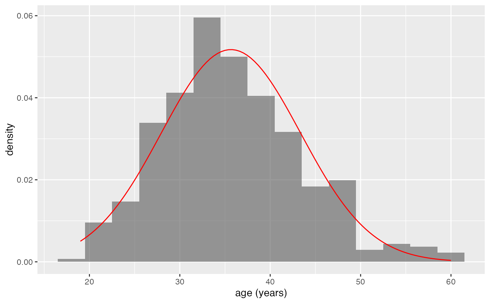
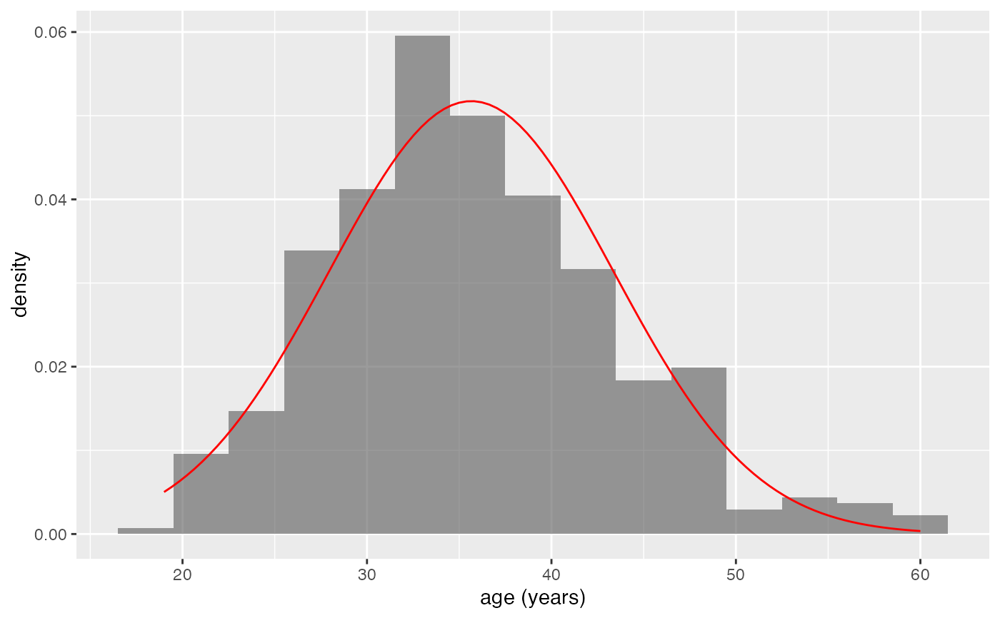

These functions provide two different interfaces for creating a layer that contains the graph of a function.
Usage
gf_function(object = NULL, fun, data = NULL, ..., inherit = FALSE)
gf_fun(object = NULL, formula, ..., inherit = FALSE)Arguments
- object
When chaining, this holds an object produced in the earlier portions of the chain. Most users can safely ignore this argument. See details and examples.
- fun
A function.
- data
A data frame with the variables to be plotted.
- ...
Additional arguments passed as
paramstolayer(). This includesxlim, a numeric vector providing the extent of the x-axis values used to evaluatefunfor plotting. By default,xlimis not used for other layers.- inherit
A logical indicating whether default attributes are inherited.
- formula
A formula describing a function. See examples and
mosaicCore::makeFun().
Examples
gf_function(fun = sqrt, xlim = c(0, 10))
 gf_dhistogram(~age, data = mosaicData::HELPrct, binwidth = 3, alpha = 0.6) |>
gf_function(
fun = stats::dnorm,
args = list(mean = mean(mosaicData::HELPrct$age), sd = sd(mosaicData::HELPrct$age)),
color = "red"
)

gf_fun(5 + 3 * cos(10 * x) ~ x, xlim = c(0, 2))
gf_dhistogram(~age, data = mosaicData::HELPrct, binwidth = 3, alpha = 0.6) |>
gf_function(
fun = stats::dnorm,
args = list(mean = mean(mosaicData::HELPrct$age), sd = sd(mosaicData::HELPrct$age)),
color = "red"
)

gf_fun(5 + 3 * cos(10 * x) ~ x, xlim = c(0, 2))
 # Utility bill is quadratic in month?
f <- makeFun(lm(totalbill ~ poly(month, 2), data = mosaicData::Utilities))
gf_point(totalbill ~ month, data = mosaicData::Utilities, alpha = 0.6) |>
gf_fun(f(m) ~ m, color = "red")
# Utility bill is quadratic in month?
f <- makeFun(lm(totalbill ~ poly(month, 2), data = mosaicData::Utilities))
gf_point(totalbill ~ month, data = mosaicData::Utilities, alpha = 0.6) |>
gf_fun(f(m) ~ m, color = "red")